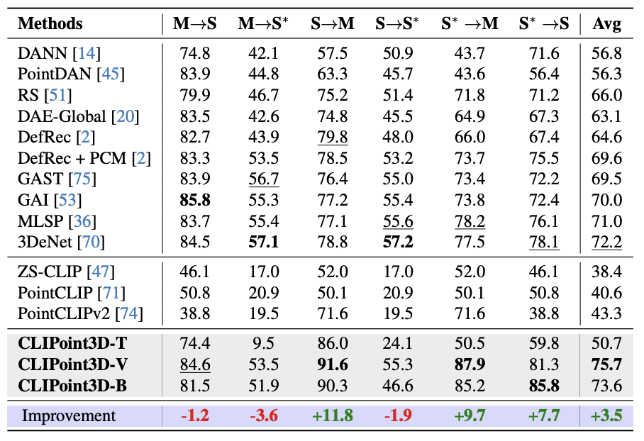
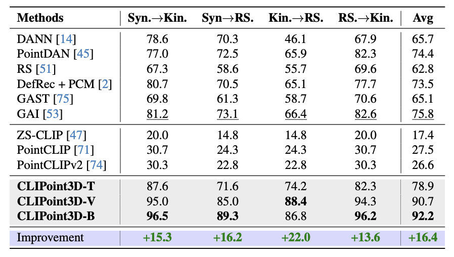
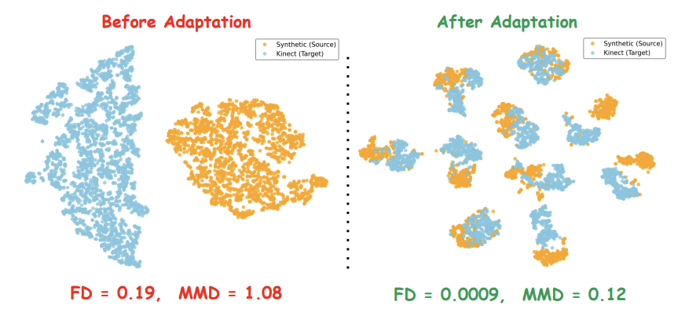
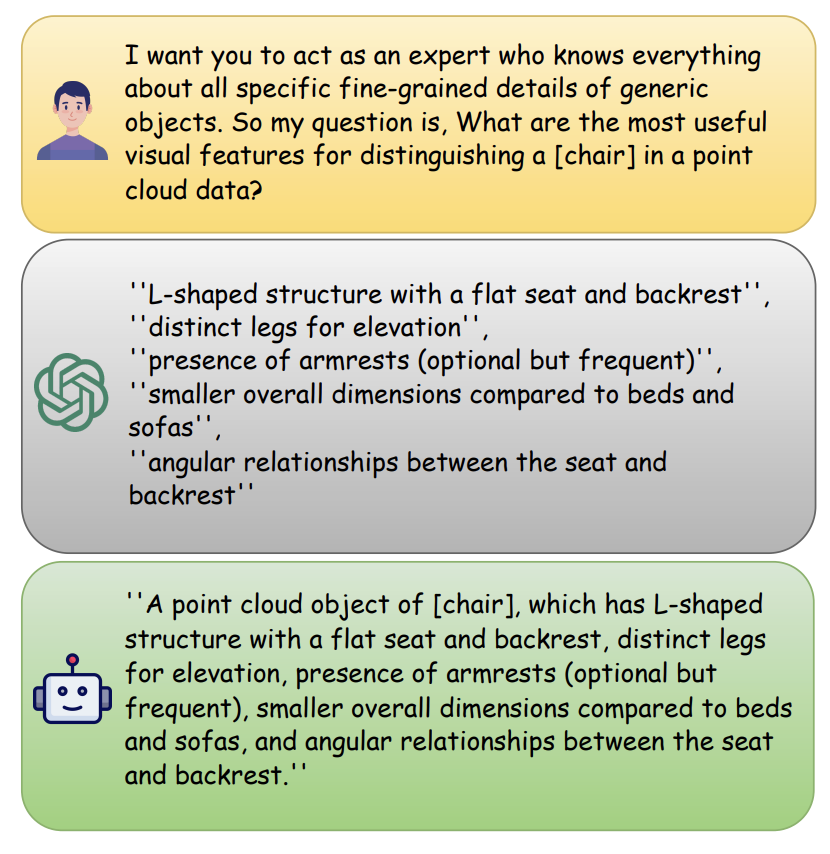

Results

Domain adaptation performance on the PointDA-10 benchmark.

Domain adaptation performance on the GraspNetPC-10 benchmark.

t-SNE visualization of CLIPoint3D's performance before and after adaptation.

LLM attributes generation
Copyright: CC BY-NC-SA 4.0 © Mainak Singha | Last updated: 10 Apr 2026 |Template Credit: Nerfies